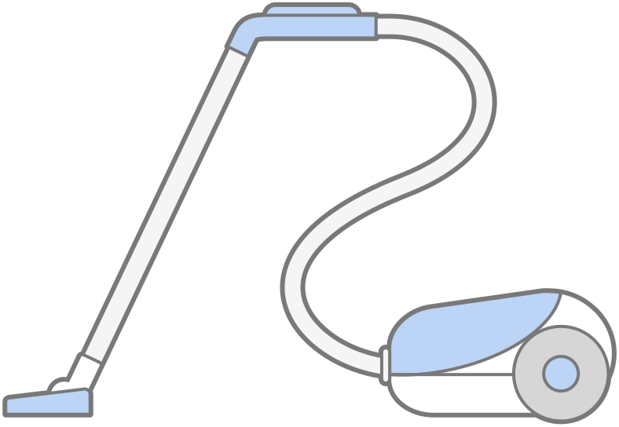

CS 463G & CS 663
(Intro to) AI
Lecture 2b: Designing Intelligent Agents
Fall 2026
The Room Is Clean. Should We Stop?
The vacuum is in A. Its sensor says clean. It cannot see B.
What should the agent remember before deciding to stop?
Specify the Task with PEAS
PEAS = Performance measure, Environment, Actuators, Sensors.
| Component | Our two-room vacuum |
|---|---|
| Performance measure | Keep rooms clean; avoid unnecessary actions. |
| Environment | Rooms A and B, dirt, and the vacuum’s location. |
| Actuators | Move left, move right, suck dirt, or do nothing. |
| Sensors | Current location and dirt in the current room only. |
Describe success and available information before choosing an algorithm.
One World, Explicit Assumptions
- Two connected rooms: A on the left, B on the right.
- A move or a cleaning action takes one step.
- Sensors are accurate; actions always succeed.
- Dirt does not reappear in the baseline world.
- NoOp means “no operation”: stay idle for one step.

Which assumption makes “I cleaned this room earlier” useful now?
Four Ways to Choose an Action
| Agent design | Central question |
|---|---|
| Simple reflex | What rule matches my current percept? |
| Model-based reflex | What is the state, given my history and model? |
| Goal-based | What actions can reach a desired state? |
| Utility-based | Which outcome is preferable, including tradeoffs? |
These describe decision mechanisms, not a ranking of intelligence.
Simple Reflex: Match a Rule
Current percept only. No stored history and no look-ahead.
- If the current room is dirty: Suck.
- Otherwise: move to the other room.
A simple rule can work well when the current percept is enough.
A Reflex Agent Can Keep Moving
Suppose both rooms are already clean. The same rule keeps firing.
Can the agent safely stop based only on “my current room is clean”?
Model-Based: Maintain Internal State
A model describes how actions and the environment change the world.
Internal state is an estimate of the world, not direct access to hidden facts.
Goal-Based: Consider Future States
Goal: both rooms are clean. Start in A with both rooms dirty.
- A goal test says whether a state is acceptable.
- Search or planning can find actions that reach it.
Utility-Based: Compare Acceptable Outcomes
A utility function assigns a numerical preference to outcomes.
| Plan from A | Reaches the goal? | Non-idle actions |
|---|---|---|
| Suck, Right, Suck | Yes | 3 |
| Right, Suck, Left, Suck | Yes | 4 |
- If each action uses energy, prefer the first plan, all else equal.
- With uncertainty, compare expected utility.
- Tradeoffs can include cleanliness, energy, time, and risk.
Reaching a goal and choosing a preferable outcome are different questions.
Learning Can Improve Any Design
- Learn better rules from experience.
- Learn a better model of action outcomes.
- Learn to predict utility more accurately.
- Use feedback to update the decision-making components.

Remembering a room’s condition is not, by itself, learning better rules.
Which Component Is Missing?
| Situation | Needed addition |
|---|---|
| The vacuum forgets rooms it has already cleaned. | Internal state |
| It needs an action sequence that cleans both rooms. | Goal-directed planning |
| Two plans work, but one uses much less energy. | A preference / cost criterion |
| It should improve its rules after repeated mistakes. | Learning |
Can a single agent use all four additions?
Python Demo: One Fair Experiment
- Both agents start in A, with both rooms dirty.
- Run each for 8 steps, including idle steps.
- After each action, award 1 point per clean room.
- Subtract 0.25 points per non-idle action.
S = \text{clean-room time} - 0.25 \times \text{non-idle actions}
Same environment, sensors, starting state, and scoring rule.
The Simulator Owns the World
Truemeans dirty;Falsemeans clean.- The simulator stores both rooms’ conditions.
- The agent receives only
(current_room, current_dirt).
World state belongs to the simulator. Percepts are the agent’s input.
Actions Change the World
The apply method belongs to VacuumWorld.
NoOp leaves the world unchanged. The outer loop still advances time.
Agent 1: A Simple Reflex Rule
- Dirty here? Clean here.
- Otherwise, go to the other room.
- No record of what happened before.
What will it do after it has cleaned both rooms?
Agent 2: Remember What We Know
class MemoryAgent:
def __init__(self):
self.seen = {"A": None, "B": None}
def act(self, percept):
room, dirty = percept
self.seen[room] = dirty
if dirty:
self.seen[room] = False # Predict successful cleaning.
return "Suck"
if all(value is False for value in self.seen.values()):
return "NoOp"
return "Right" if room == "A" else "Left"None means unknown. Stop only when both rooms are known to be clean.
Connect Sensing, Acting, and Scoring
Start with a fresh world, an empty trace, and score = 0.0.
The evaluator can inspect both rooms. The agent cannot.
Predict the Fourth Action
Start in A; both rooms are dirty. Both agents take the same first three actions.
| Step | Percept before acting | Action | Memory after acting |
|---|---|---|---|
| 1 | A, dirty | Suck | A: clean; B: unknown |
| 2 | A, clean | Right | A: clean; B: unknown |
| 3 | B, dirty | Suck | A: clean; B: clean |
At step 4, both agents receive (B, clean).
What does each agent do? Which fact lets their answers differ?
The Trace Reveals the Difference
| Step | Reflex action | Memory action | Clean rooms, either agent |
|---|---|---|---|
| 1 | Suck | Suck | 1 |
| 2 | Right | Right | 1 |
| 3 | Suck | Suck | 2 |
| 4 | Left | NoOp | 2 |
| 5 | Right | NoOp | 2 |
| 6 | Left | NoOp | 2 |
| 7 | Right | NoOp | 2 |
| 8 | Left | NoOp | 2 |
After step 3, extra movement adds cost without improving cleanliness.
Compare Outcomes, Not Only Actions
| Metric over 8 steps | Reflex agent | Memory agent |
|---|---|---|
| Clean-room time | 14 | 14 |
| Non-idle actions | 8 | 3 |
| Action penalty | 2.00 | 0.75 |
| Total score | 12.00 | 13.25 |
14 - 0.25(8) = 12, \qquad 14 - 0.25(3) = 13.25
If the action penalty were zero, would these two scores differ?
Change the World, Recheck the Model
At the start of step 5, room A becomes dirty again.
- The reflex agent is in A and immediately cleans it.
- The memory agent is idle in B and does not observe A.
- Its remembered fact “A is clean” is now stale.
| Same 8-step scoring rule | Reflex | Memory |
|---|---|---|
| Final clean rooms | 2 | 1 |
| Total score | 12.00 | 9.25 |
Memory helps only when its updates and assumptions fit the environment.
Design Exercise: A Battery-Limited Vacuum
Battery capacity: 6 units. Each move or Suck costs 1 unit. Recharge at A restores all 6 in one step; NoOp costs no energy. Dirt can reappear. Sensors report location, current-room dirt, and battery level.
- Specify PEAS, including recharging at A.
- What should the agent remember?
- Which decision mechanisms should it combine?
- Find a case where “clean whenever dirty” fails.
One Possible Design
- PEAS: sustained cleanliness without getting stranded; four rooms and a dock; move, Suck, NoOp, Recharge; local dirt, location, and battery sensors.
- Internal state: room map, last observations, observation ages, and battery level.
- Goal and planning: complete useful cleaning trips and return to the dock.
- Preference: compare cleanliness gains, energy costs, and stale information.
At D with 3 units left, cleaning would leave too little energy to return to A.
Takeaways
- PEAS specifies the task before implementation.
- Rules, state, goals, and utility answer different questions.
- Learning can improve the components of an agent.
- Evaluate agents under the same conditions.
- Recheck the design when its assumptions change.